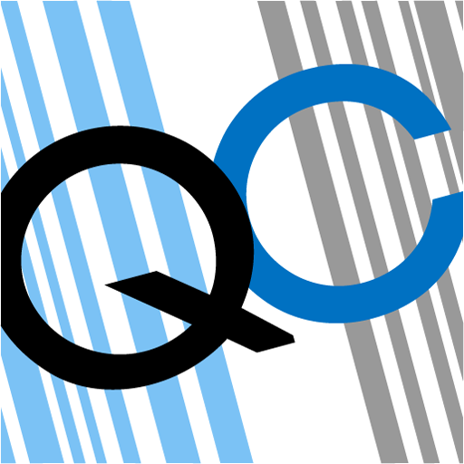
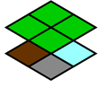
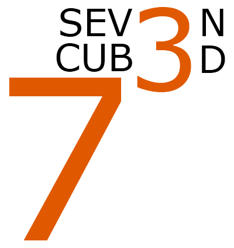

<div id='projects' class='gm-content-pane'>
    <ul class="content-list">
      <li>
        <a></a>
        <div class="tooltip">If you have a high-school education you’ve probably written a paper or two, and been subjected to the tedious task of citing sources for that paper. <a href='http://quickcite.it'>QuickCite</a> minimizes this tedium. Now all you do is scan the barcode on your source with your iPhone/Android, and we send a properly-formatted citation to your inbox. QuickCite had a few moments of fame last february, being featured in <a href='http://www.businessinsider.com/million-dollar-idea-scan-books-with-this-app-and-get-an-instant-bibliography-2011-2'>BusinessInsider</a> and <a href='http://abcnews.go.com/WNT/video/conversation-quick-cite-creators-cubed-12965830'>ABC News</a> to name only two.</div>
      </li>
      <li>
        <a></a>
        <div class="tooltip">Played Minecraft? Then you know it’s awesome. <a href='http://minehub.net'>Minehub</a> lets you play minecraft with your friends easily with on-demand servers. We’re currently in private beta.</div>
      </li>
      <li>
        <a></a>
        <div class="tooltip">Lifetracker is my current favourite project. It is a system that lets you track arbitrary data about your life using your phone, and then finds interesting correlations you can use to live smarter and better.</div>
      </li>
      <li id='amp'>
        <a></a>
        <div class="tooltip"><a href='http://ampersand.garethmacleod.com'>Ampersand</a> was a weekend project of mine and Liam Miller-Cushon. We piped a souped-up <a href="http://chat.nodejs.org/">node-chat</a> through the <a href="http://code.google.com/apis/language/translate/overview.html">Google Translate API</a> and ended up with Universal Translator Chat!</div>
      </li>
      <li id='seven'>
        <a></a>
        <div class="tooltip">Sometimes school just doesn’t scratch the creative itch, that’s why last November, myself and six of the best hackers I know locked ourselves in an office and tried to write a complete software product every day for a week. We called it <a href='http://7cubedproject.com'>7Cubed</a>: 7 Hackers 7 Apps 7 Days. Many of my side-projects since then have been offshoots of 7Cubed.</div>
      </li>
  </ul>
</div>
